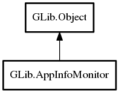

AppInfoMonitor
Object Hierarchy:
Description:
AppInfoMonitor is a very simple object used for monitoring the app info database for changes (ie: newly installed or removed applications).
Call @get to get a AppInfoMonitor and connect to the "changed" signal.
In the usual case, applications should try to make note of the change (doing things like invalidating caches) but not act on it. In particular, applications should avoid making calls to AppInfo APIs in response to the change signal, deferring these until the time that the data is actually required. The exception to this case is when application information is actually being displayed on the screen (eg: during a search or when the list of all applications is shown). The reason for this is that changes to the list of installed applications often come in groups (like during system updates) and rescanning the list on every change is pointless and expensive.
Namespace: GLib
Package: gio-2.0
Content:
Static methods:
Creation methods:
Signals:
Inherited Members:
All known members inherited from class GLib.Object